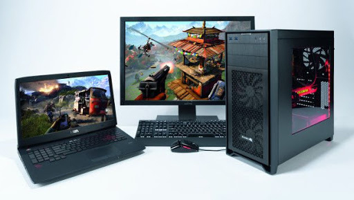
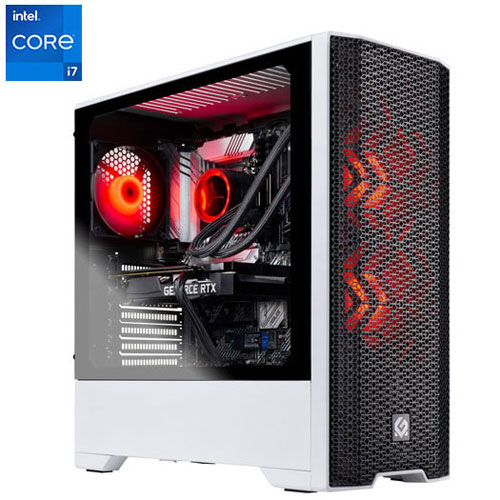
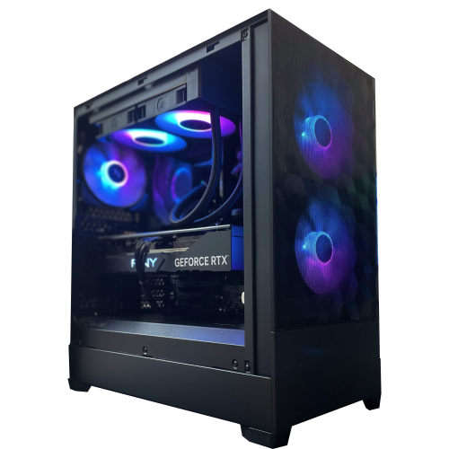
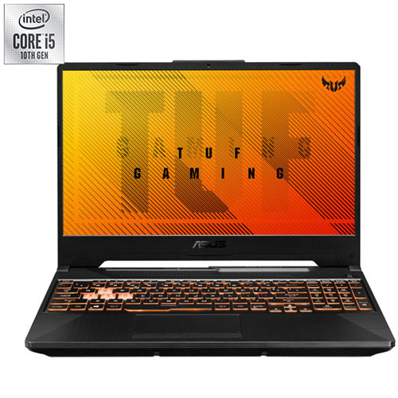
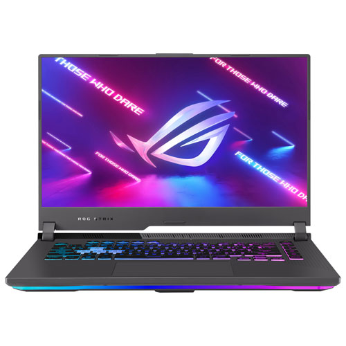

Présentation:
Notre vaste gamme de produits comprend des ordinateurs de bureau surpuissants, des ordinateurs portables ultramodernes, des composants haut de gamme, des périphériques de jeu de pointe et bien plus encore. Que vous soyez un joueur passionné à la recherche de la meilleure expérience de jeu possible, un créateur de contenu à la recherche d'outils performants pour donner vie à votre imagination ou tout simplement un amateur de technologie avide des dernières tendances, vous trouverez votre bonheur chez Geek Hub. Nous sommes fiers de collaborer avec les marques les plus renommées de l'industrie, telles qu'ASUS, Acer, Dell, HP, MSI et bien d'autres encore, pour vous offrir des produits de qualité supérieure. Que vous recherchiez un ordinateur de jeu doté des dernières technologies graphiques, un ordinateur portable élégant et léger pour vos déplacements ou des périphériques de jeu tels que des claviers mécaniques, des souris précises et des casques audio immersifs, notre sélection minutieuse saura combler vos attentes. Chez Geek Hub, nous croyons en la satisfaction totale de nos clients. C'est pourquoi nous nous efforçons de vous offrir un service client exceptionnel, des conseils d'experts et une livraison rapide et sécurisée. Notre équipe de passionnés de technologie est là pour répondre à toutes vos questions, vous guider dans vos choix et vous assurer une expérience d'achat sans tracas. De plus, Geek Hub est bien plus qu'une simple boutique en ligne. Nous sommes une communauté vibrante et engagée de geeks et de passionnés de technologie. Rejoignez-nous sur nos réseaux sociaux, participez à nos concours et restez à l'affût des dernières actualités, des lancements de produits et des événements spéciaux. Partagez votre amour pour la technologie avec d'autres membres de la communauté Geek Hub et découvrez de nouvelles perspectives, des astuces et des recommandations. Qu'il s'agisse de transformer votre expérience de jeu, de réaliser vos projets créatifs ou de rester à la pointe de la technologie, Geek Hub est là pour vous accompagner dans votre voyage. Explorez notre site, découvrez nos offres spéciales et plongez dans un monde où la technologie est reine. Bienvenue chez Geek Hub, votre paradis geek ultime !
.
.
.
.
.
Nos produits:
Plongez dans le monde de la technologie avec nos produits high-tech sélectionnés avec soin sur GEEK HUB. Des smartphones aux casques audio, des appareils photo aux objets connectés, nous proposons une gamme diversifiée qui repousse les limites de l'innovation. Que vous souhaitiez rester à la pointe de la technologie, améliorer votre productivité ou simplement vous offrir un divertissement de qualité, nos produits high-tech sauront vous combler. Découvrez des fonctionnalités avancées, un design élégant et une performance exceptionnelle dans chaque produit que nous proposons. Plongez-vous dans l'avenir numérique et faites de GEEK HUB votre destination incontournable pour tous vos besoins high-tech.
Les ordinateurs:
Les ordinateurs sont devenus indispensables dans notre vie quotidienne. Ils nous permettent de rester connectés, de travailler, de créer et de nous divertir. Que vous recherchiez une puissance de calcul intense ou une mobilité accrue, trouvez l'ordinateur parfait pour répondre à vos besoins sur GEEK HUB.
Les ordinateur de bureau:
Découvrez notre sélection d'ordinateurs de bureau dernier cri sur GEEK HUB. Performants et polyvalents, ils offrent une expérience informatique exceptionnelle pour tous les passionnés de technologie.
SkyTech Blaze Gaming PC - White (Intel Core I7-11700F/1TB SSD/16GB RAM/RTX 3060Ti/Win 10)
$1,599
Pour seulement $1,599, découvrez la puissance ultime du SkyTech Blaze Gaming PC - White, disponible exclusivement chez GEEK HUB. Équipé d'un processeur Intel Core i7-11700F et d'une carte graphique NVIDIA RTX 3060Ti, ce PC vous offre des performances exceptionnelles pour tous vos jeux préférés. Avec 16 Go de RAM et un SSD de 1 To, vous bénéficiez d'une réactivité instantanée et d'un stockage généreux pour vos jeux, vos fichiers et vos logiciels. Le design élégant en blanc ajoute une touche de modernité à votre configuration, tandis que le système d'exploitation Windows 10 garantit une compatibilité maximale. Plongez-vous dans une expérience de jeu immersive et sans compromis avec le SkyTech Blaze Gaming PC - White, votre passeport vers la victoire.
Quoted Tech Frontier PC - Black - EX (Intel 13th Gen - i9 13900KF, RTX 4070Ti, 2TB SSD, 32GB RAM, Windows 11)
$3,599
Pour $3,599, explorez de nouveaux horizons technologiques avec le Quoted Tech Frontier PC - Black - EX, disponible en exclusivité chez GEEK HUB. Propulsé par le processeur Intel 13th Gen - i9 13900KF et la carte graphique RTX 4070Ti, ce PC repousse les limites de la performance pour les utilisateurs les plus exigeants. Avec 32 Go de RAM et un SSD de 2 To, vous disposez d'une puissance de calcul inégalée et d'un espace de stockage généreux pour vos jeux, vos projets créatifs et vos fichiers multimédias. Le tout nouveau système d'exploitation Windows 11 vous offre une interface fluide et une expérience utilisateur intuitive. Plongez dans l'univers de la haute technologie avec le Quoted Tech Frontier PC - Black - EX, votre compagnon vers de nouvelles frontières de l'informatique.
Les ordinateur portable
Découvrez notre sélection d'ordinateurs portables sur GEEK HUB, alliant puissance, mobilité et élégance. Que vous soyez un professionnel en déplacement ou un étudiant cherchant un compagnon de travail fiable, nos ordinateurs portables répondront à tous vos besoins. Dotés de processeurs rapides, de grandes capacités de stockage et d'une autonomie prolongée, ils vous permettront d'accomplir vos tâches avec fluidité, que ce soit pour travailler, étudier ou vous divertir. De plus, leur design moderne et léger en fait des compagnons de voyage parfaits. Explorez notre gamme d'ordinateurs portables sur GEEK HUB et trouvez celui qui correspond parfaitement à votre style de vie numérique.
ASUS TUF Gaming F15 15.6" Gaming Laptop (Intel Core i5-10300H/512GB SSD/8GB RAM/GeForce GTX 1650)
$799
Pour seulement $799, explorez l'ASUS TUF Gaming F15 15.6" Gaming Laptop, disponible en exclusivité sur GEEK HUB. Conçu pour les joueurs exigeants, cet ordinateur portable offre une expérience de jeu immersive. Équipé d'un puissant processeur Intel Core i5-10300H, d'une carte graphique GeForce GTX 1650 et d'un SSD de 512 Go, il garantit des performances fluides et rapides. Avec 8 Go de RAM, vous pouvez exécuter plusieurs tâches en toute facilité. Son écran de 15,6 pouces vous plonge dans des visuels époustouflants, tandis que son clavier rétroéclairé vous permet de jouer même dans l'obscurité. Faites l'expérience du gaming ultime avec l'ASUS TUF Gaming F15, disponible uniquement sur GEEK HUB.
Portable jeu 15,6 po ROG Strix G15 d'ASUS (Ryzen 7 4800H d'AMD/SSD 512 Go/RAM 16 Go/GeForce RTX 3050/Windows 11)
$1299
Pour $1299, découvrez le portable de jeu 15,6 pouces ROG Strix G15 d'ASUS, disponible exclusivement sur GEEK HUB. Conçu pour les passionnés de jeux, cet ordinateur portable offre des performances exceptionnelles. Équipé du puissant processeur Ryzen 7 4800H d'AMD, d'une carte graphique GeForce RTX 3050 et d'un SSD de 512 Go, il vous permettra de profiter d'une expérience de jeu fluide et immersive. Avec 16 Go de RAM, vous bénéficiez d'une grande capacité multitâche pour exécuter vos jeux et applications sans effort. De plus, avec Windows 11 préinstallé, vous profiterez d'une interface moderne et d'une compatibilité optimale avec les derniers jeux et logiciels. Plongez dans l'univers du gaming avec le ROG Strix G15 d'ASUS, le choix ultime des joueurs exigeants, disponible sur GEEK HUB.
.
.
.
.
.
A propos de nous:
Chez GEEK HUB, notre passion est de vous offrir une expérience technologique exceptionnelle. Nous sommes dédiés à vous proposer une sélection minutieuse d'ordinateurs, d'accessoires high-tech et de gadgets dernier cri. Que vous soyez un amateur de jeux, un créateur de contenu ou simplement un passionné de technologie, nous sommes là pour répondre à tous vos besoins. Découvrez notre collection soigneusement choisie et plongez dans un monde d'innovation et de performance avec GEEK HUB.
Nos coordonnées
Adresse : 123 Rue Technologie, Ottawa, ON K1P 1A1
Téléphone : (123) 456-7890
Email : geekhub.ottawa@gmail.com
.
.